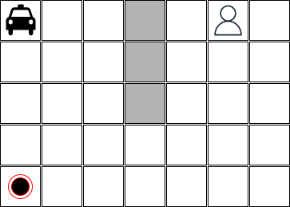
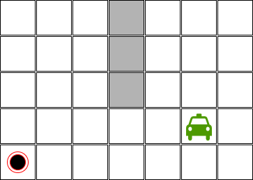

Taxi Driver
Neste exercício você deverá implementar um agente taxi driver. Um agente que é capaz de definir uma sequências de ações para pegar um passageiro em uma posição e deixá-lo em outra possição no mesmo mapa - um mapa que possui obstáculos.
Por exemplo, considere o seguinte mapa:

Neste mapa:
- o táxi está na posição [0,0],
- o passageiro está na posição [0,5],
- o passageiro precisa ser levado para a posição [4,0],
- o mapa tem 5 linhas e 7 colunas, e
- existem obstáculos no mapa que estão pintados em cinza.
Sabemos que o táxi sabe executar as seguintes ações:
- ir para baixo;
- ir para cima;
- ir para esquerda;
- ir para direita;
- pegar o passageiro, e;
- liberar o passageiro.
Aspectos importantes sobre algumas ações:
-
a ação pegar o passageiro só pode ser executada se o táxi estiver vazio.
-
a ação pegar o passageiro pode ser executada em qualquer posição do mapa. No entanto, só vai ter o efeito desejado se o táxi estiver na mesma posição que o passageiro.
-
a ação liberar o passageiro só pode ser executada se o táxi estiver com o passageiro.
-
a ação liberar o passageiro pode ser executada em qualquer posição do mapa. No entanto, só vai ter o efeito desejado se o táxi estiver na posição onde o passageiro precisa chegar.
Qual é a sequência de ações que o táxi precisa executar para pegar o passageiro e levar até o destino?
A solução implementada precisa ser capaz de tratar diversas configurações com diversas dimensões. Por exemplo, a figura abaixo ilustra uma configuração possível onde o táxi está pintado de verde porque ele está com o passageiro:

A imagem abaixo é um mapa com as mesmas dimensões, mas com um número maior de obstáculos:

Entrega do exercício
- Este exercício deverá ser feito por equipes com até 3 integrantes.
- O prazo máximo para entrega é 27/09/2022 (terça-feira) até às 18:00 horas.
- A entrega deverá ser feita via Github Classroom.
- O link para o projeto template e para a entrega é https://classroom.github.com/a/H0ys1-V_.
- Cada equipe deverá entregar a implementação de um taxi driver e um arquivo de documentação (
taxi_driver_readme.md).
Questões que precisam ser respondidas na documentação do exercício
O arquivo taxi_driver_readme.md deve apresentar os nomes dos integrantes da equipe e deverá responder as seguintes perguntas:
- O que é relevante representar nos estados do mundo? Como os estados são estruturados (estrutura de dados) e qual o significado dela (dos campos)?
- Mostre como ficam representados os estados inicial e final segundo a representação adotada.
- Quais as operações sobre os estados? (detalhe como cada operação irá alterar os estados e quais as condições para cada operação ser executada)
- Que algoritmo de busca foi utilizado para resolver este problema considerando que a solução apresentada precisa ser ótima e que deve ser processada na ordem de segundos, no máximo em poucos minutos?
- A equipe fez uso de heurísticas? Se sim, explique as heurísticas utilizadas.
- Quais são os limites da solução? A solução consegue tratar mapas com que dimensões? Quão complexo pode ser a estrutura de obstáculos?
Todas as questões precisam estar respondidas para que a equipe tenha no mínimo nota C no trabalho como um todo. Se a equipe deixou de responder uma (1) ou duas (2) questões então a nota é D, caso contrário I. A documentação completa e coerente com a impĺementação é pré-requisito para que a equipe tenha no mínimo nota C.
Requisitos da implementação do taxi driver
A equipe deverá implementar no minímo dois arquivos: um arquivo python com a lógica do agente taxi driver e um arquivo de testes usando pytest. Qualquer entrega que não tenha os dois arquivos, o arquivo da solução e o arquivo de testes, terá nota I.
-
A configuração do mapa deve ser fornecida via arquivo texto. Deve ser um dos parâmetros da implementação. A posição do passageiro, o destino final e a posição do táxi também podem ser fornecidas via arquivo texto ou via parâmetro de chamada da aplicação - este aspecto fica à critério da equipe.
-
O arquivo de teste deve considerar os cenários ilustrados acima, mais os cenários ilustrados abaixo para que a equipe consiga um C como nota:


-
Para os dois (2) primeiros cenários a solução precisa encontrar resposta ótima na ordem de segundos. Se isto acontecer, a equipe tem garantida nota C. Caso contrário, se a equipe entregou todos os itens solicitados, mas as soluções não são boas o suficiente então a nota será D.
-
Se a solução encontrar resposta ótima na ordem de segundos para todos os cenários apresentados neste documento então a nota da equipe será B1.
-
O plano encontrado pelo agente taxi driver pode ser apresentado ao final da execução através de um print em modo texto. Neste caso a nota da equipe será B. Para alcançar uma nota A ou A+ a equipe deverá implementar uma forma de visualização onde consegue ver o táxi em movimento e executando as ações. Não precisa ser necessariamente uma interface gráfica. Pode ser algum tipo de visualização dinâmica em modo texto.
-
Outro critério para alcançar a nota A ou A+ é desenvolver um agente capaz de lidar com configurações mais complexas que as apresentadas aqui neste documento. Configurações com dimensões maiores e com um número maior de obstáculos.
A nota obtida neste exercício será atribuída aos itens básico4 e básico5 na avaliação.
-
É importante lembrar que a equipe deve satisfazer também os requisitos de documentação para alcançar esta nota. ↩